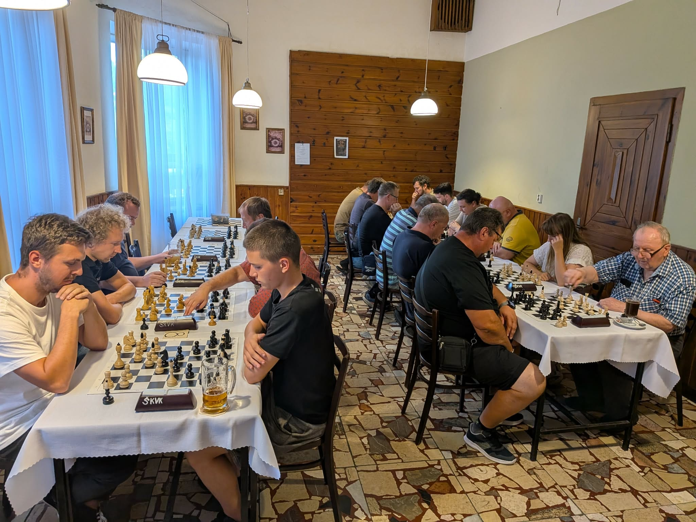
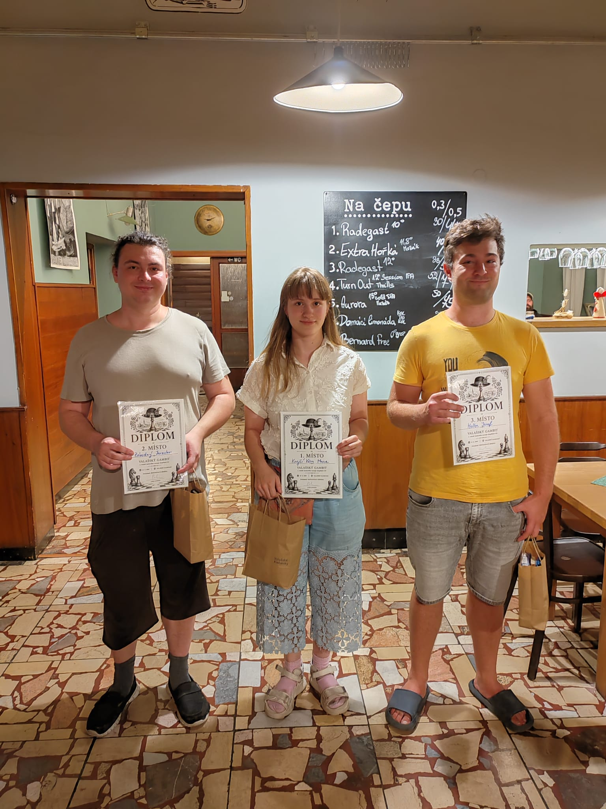
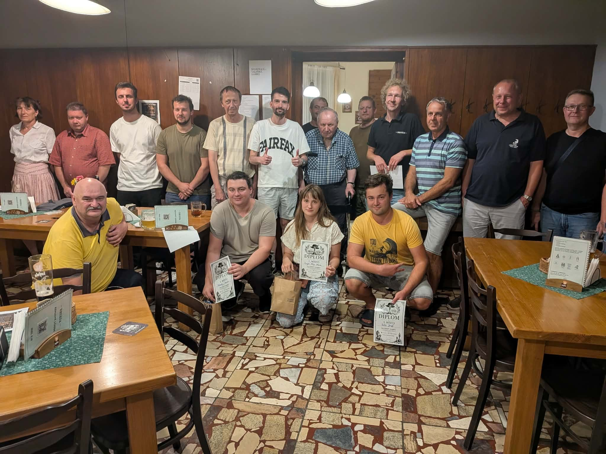

Valašský gambit rozehrál první partii
Jouzolean a Pajk přenesli zkušenosti z Monday Fight domů do Valašských Klobouk. První ročník jejich turnaje přivedl k šachovnicím dvacet hráčů, propojil několik generací a našel vítězku v nejmladší účastnici celého pole.

Ve čtvrtek 27. srpna se sál restaurace Beseda proměnil v šachovou arénu. Za prvním ročníkem Valašského gambitu stáli dva Klobučané a zároveň hráči Monday Fight: Jouzolean (Jiří Kostka) a Pajk (Patrik Pekař). Jejich cílem nebylo jen uspořádat jednorázový turnaj, ale podpořit šachovou kulturu ve městě a ukázat, že Valašské Klobouky mají královské hře co nabídnout.
Valašská stopa je ostatně v Monday Fight výrazná. Vedle Jouzoleana a Pajka pochází z Valašských Klobouk také Rychlý Lenochod, Travinho, Mates7824, dzin69 a ButaCzech. Tentokrát se však pozornost přesunula od pondělních online bitev k opravdovým figurám, hodinám a deseti minutám na celou partii.
Valašská sedmička Monday Fight


Mládí před zkušeností
Startovní pole bylo na premiérový ročník nezvykle silné. Nechyběla mezinárodní mistryně Věra Medunová s FIDE ELO 2105 ani další hráči s ratingem přes 2000. Turnaj přitom nabídl krásný generační oblouk: nejstarším účastníkem byl místní šachista Jaromír Bistrý, ročník 1937. V devětaosmdesáti letech odehrál všech šest kol a získal dva body.
Hlavní příběh večera ale patřil opačnému konci věkového spektra. Teprve osmnáctiletá Věra Marie Krejčí ze ŠK Hošťálková prošla turnajem bez jediné porážky. Čtyři partie vyhrála, dvě remizovala a s pěti body ovládla celkové pořadí. Druhý skončil Jaroslav Závodný ze ŠK Vsetín a třetí Josef Holba ze ŠK Brumov-Bylnice; oba nasbírali 4,5 bodu. Holba navíc dokázal bílými porazit zkušenou WIM Medunovou.

Konečné pořadí na špici
| Pořadí | Hráč | FIDE ELO | Body |
|---|---|---|---|
| 1. | Věra Marie Krejčí | 1851 | 5,0 |
| 2. | Jaroslav Závodný | 1914 | 4,5 |
| 3. | Josef Holba | 1871 | 4,5 |
| 4. | Petr Kapusta | 2083 | 4,0 |
| 5. | Jaroslav Buran | 2008 | 4,0 |
| 6. | Milan Krčmář | 1939 | 4,0 |
Turnaj, který má pokračování
Valašský gambit se odehrál v přátelské a uvolněné atmosféře, ale za šachovnicemi se bojovalo naplno. K úspěchu přispěla restaurace Beseda a její tým, město Valašské Klobouky se starostou Josefem Belaškou i místní šachový klub. Jeho kapitán Martin Haboň zapůjčil šachovnice a hodiny, bez nichž by se první tah nemohl odehrát.

Premiéra tak splnila všechno, co si pořadatelé přáli: dala dohromady místní hráče i silné hosty, propojila osmnáctiletou vítězku s devětaosmdesátiletým šachovým matadorem a přinesla Valašským Kloboukám nový turnaj. Jouzolean s Pajkem už počítají s pokračováním. První kapitola Valašského gambitu tedy skončila, ale partie rozhodně nekončí.
Zdroj výsledků a údajů: oficiální reportáž města Valašské Klobouky a konečná turnajová tabulka.